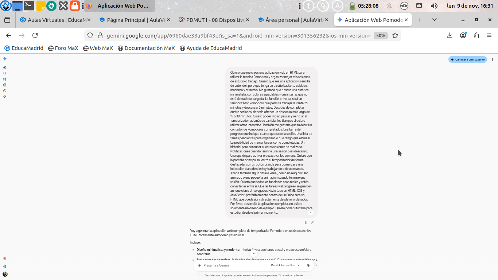
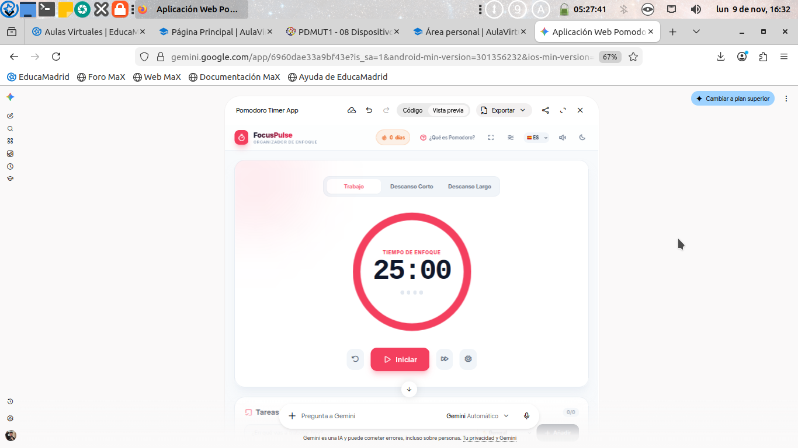
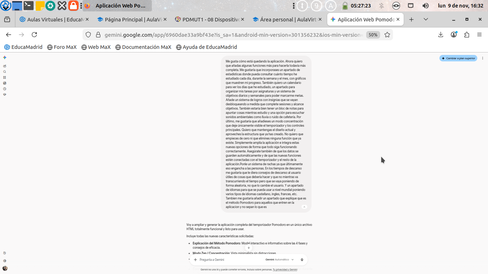
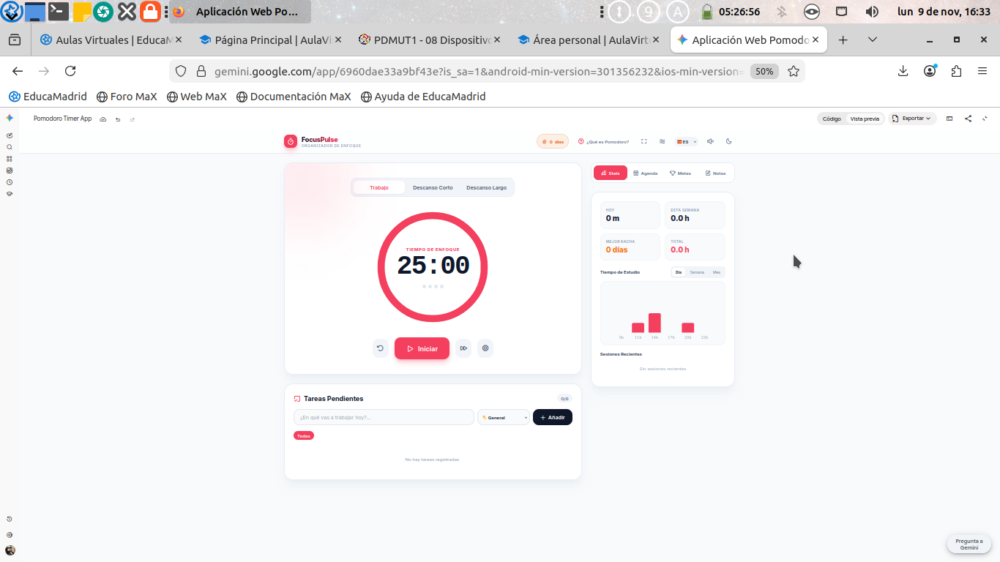
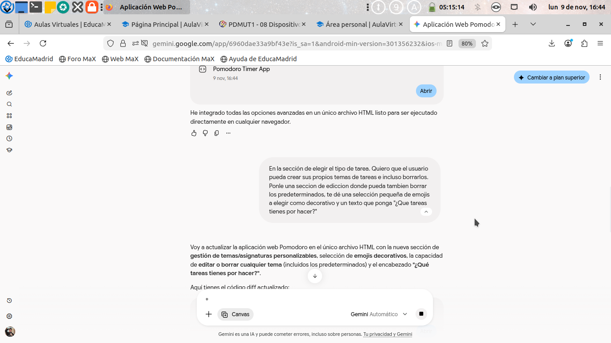
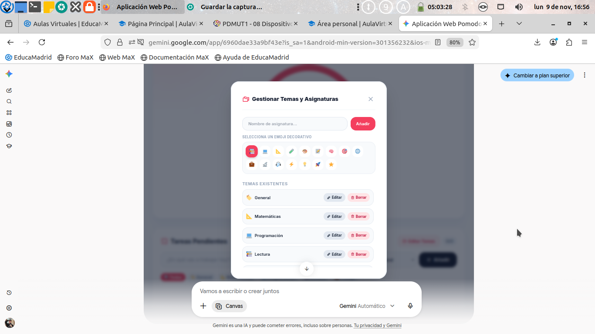

Documentación de prompts, evolución de versiones y uso de Inteligencia Artificial (2º DAM)
Autor: David Moreno Alba
El desarrollo de la aplicación web de temporizador Pomodoro se ha llevado a cabo de forma iterativa empleando Google Gemini como asistente principal. El flujo de trabajo se ha estructurado en fases sucesivas: desde una estructura base funcional hasta la integración de paneles avanzados de estadísticas, gestión de asignaturas personalizables con emojis y modos de concentración.
Prompt Aplicado:
"Quiero que me crees una aplicación web en HTML para utilizar la técnica Pomodoro y organizar mis sesiones de estudio o trabajo... Temporizador Pomodoro que permita trabajar durante 25 minutos y descansar 5 minutos... Todo en HTML, CSS y JavaScript preferiblemente dentro de un único archivo HTML..."
Capturas del Proceso (Prompt y Resultado):

Prompt inicial introducido en Gemini

Vista previa de la interfaz generada
Prompt Aplicado:
"Me gusta cómo está quedando la aplicación. Ahora quiero que añadas algunas funciones más para hacerla todavía más completa. Me gustaría que incorporases un apartado de estadísticas donde pueda consultar cuánto tiempo he estudiado cada día... un sistema de rachas... modo zen..."
Capturas del Proceso:

Prompt de ampliación de características

Integración de estadísticas y gráficos
Prompt Aplicado:
"En la sección de elegir el tipo de tarea. Quiero que el usuario pueda crear sus propios temas de tareas e incluso borrarlos. Ponle una sección de edición donde pueda también borrar los predeterminados, te dé una selección pequeña de emojis a elegir..."
Capturas del Proceso:

Prompt de gestión de temas

Modal interactivo de categorías y emojis